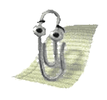

An interactive research poster exploring Artificial Intelligence in school settings.
Scroll down to explore the project.
Interviews were conducted with six participants (2 teachers, 4 students) from a school in Depok. Participants were selected by the school and interviewed individually. Each interview lasted about 30–50 minutes using a semi-structured format. Informed consent was obtained before interviews. Transcripts were coded to identify recurring themes, similarities, and differences.
After analyzing the interview results, all participants revealed that the most used AI tools are ChatGPT, Gemini, Perplexity, Deepseek, Claude, Canva AI, Google AI, and Black Box. The school’s strong technology integration was repeatedly highlighted. AI use began in 2020 and increased after Chromebook adoption in 2024 and the introduction of coding classes.
However, concerns were raised about cheating and dependency, especially due to the absence of formal AI policies. Teachers suggested guidance for responsible use, while some restricted Chromebook access. Students focused on cognition, privacy, and security risks. Overall, findings suggest increasing reliance on AI without proper boundaries.
The interviews revealed concerns about AI misuse when users are not fully prepared to engage critically. Although efficient, AI reliance may reduce essential learning skills. Several theories explain this normalization process.
The findings suggest techno-optimistic attitudes toward digital learning technologies (Danaher, 2022), reflected in increasing openness toward AI-supported education.
The absence of formal AI policies leads to differing interpretations of ethical AI use, increasing the risk of normalization and dependency.
AI use for searching, summarizing, and generating content reflects cognitive offloading, which may reduce independent thinking (Risko & Gilbert, 2016).
Participants often feel ethical tension but continue using AI, justifying it through efficiency or peer behavior (Zheng & Wang, 2026; Ren et al., 2026).
Students and teachers show increasing reliance on AI. Without clear guidelines, this may lead to dependency. Therefore, structured AI policies are necessary. One proposed approach is the SHINE framework:
Planning and reflection to support purposeful thinking.
Evaluating AI outputs through evidence and reasoning.
Encouraging collaboration and active engagement beyond AI assistance.
Focusing on learning and growth rather than performance outcomes.
Building self-driven learning and responsible AI use.
Azhelie Rheinendra — Research
Ghozy Alfisyahr Reuski — Literature Review
Maria indirasari — Interview Analysis
Nazira Alya — Design
